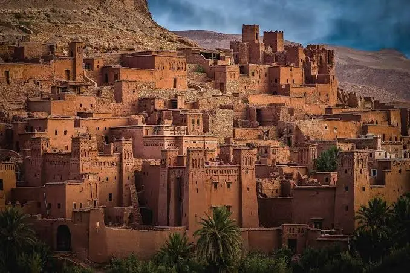
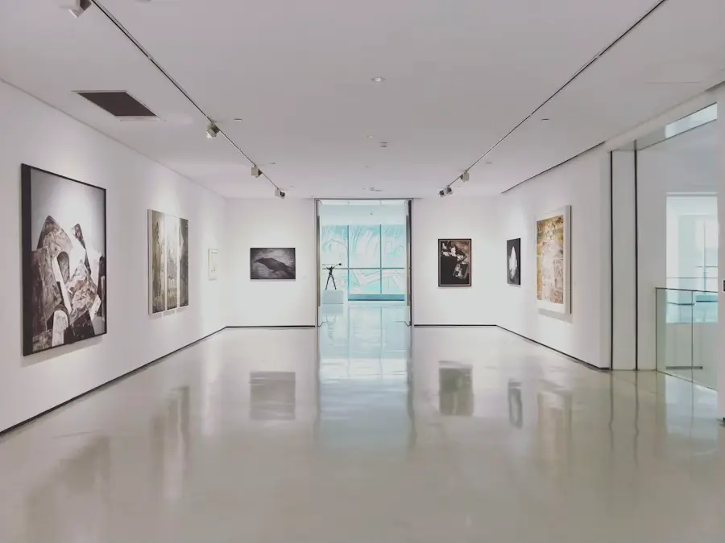
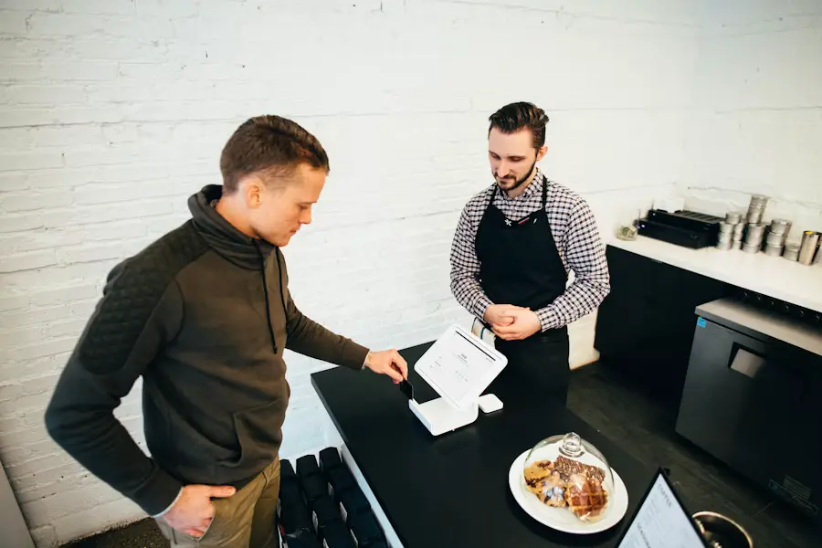
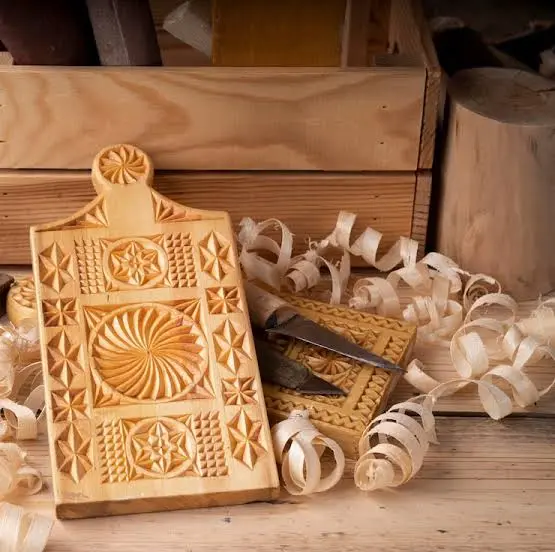

India
Jaipur Metalworkers
Skilled artisans create engraved brass and copper pieces using techniques passed down through generations.
Stackly began with a single ceramic bowl bought on a rainy afternoon in Jaipur. Six years later, we're a home for 420 artisans, and the mission hasn't changed: pay makers fairly, ship their work honestly, and tell you exactly who made the thing on your table.

We believe an object made in six weeks by one person will always outlive an object made in six seconds by a machine.
Ayaan buys a ceramic bowl from a roadside maker in Jaipur. Realises the artist earns 3% of what it sells for downtown.
A single-page website, 8 makers, and a promise: 70% of every sale goes to the artisan.
The first partnerships in Morocco, Mexico, and Japan. We fly out and sit with every studio before we list a single piece.
420 artisans across 42 countries. A team of 14. Still a promise: 70% to the maker, no exceptions.
Studio residencies, apprentice grants, and a printed journal that pays writers as fairly as we pay makers.

In 2019, while walking through the narrow streets of Jaipur, Ayaan purchased a small handmade ceramic bowl directly from a local artisan. He later discovered that the maker received only a tiny fraction of the price that similar products commanded in luxury stores.
That experience became the foundation of Stackly—a platform dedicated to connecting skilled artisans with people who value authentic craftsmanship. Today, Stackly collaborates with hundreds of artisans across the world while remaining committed to transparency, fair trade, and timeless design.
“Every handmade object carries the fingerprint of its maker. Our responsibility is to ensure that story is never lost.”
Behind every handcrafted piece is a community that has preserved its techniques for generations. From mountain villages to bustling artisan towns, these makers keep cultural heritage alive through their work.
Skilled artisans create engraved brass and copper pieces using techniques passed down through generations.


Since our journey began, every handcrafted piece has contributed to supporting artisan families, protecting traditional skills, and creating sustainable opportunities for communities around the world.
Skilled artisans from diverse cultures collaborate with Stackly, sharing traditions that have been passed down through generations.
Traditional craft communities represented worldwide.
Every sale directly supports the artisan behind the work.
Homes enriched with authentic handcrafted creations.
Handmade pieces carefully delivered across the globe.
Customers consistently rate their experience highly, appreciating authentic craftsmanship, quality, and transparent sourcing.
Every handmade creation follows a thoughtful journey before it reaches your home, ensuring authenticity, quality, and care at every stage.
Artisans carefully create every piece using traditional techniques.
Each item is inspected for craftsmanship and finishing.

Wrapped using recyclable materials with minimal waste.

Safely shipped to customers across the globe.
Whether you're discovering handmade treasures, joining our artisan network, or collaborating with our team, every journey helps keep traditional craftsmanship alive for future generations.
Discover thoughtfully crafted pieces made by artisans from around the world.
Explore CollectionShare your craft, preserve tradition, and reach customers who appreciate authentic handmade work.
Apply TodayPartner with Stackly to celebrate culture, support artisan communities, and create meaningful experiences.
Get in Touch70% of every sale goes to the artisan, upfront. We take our cut only after they've been paid.
Every piece is one-of-one. If we can't tell you who made it and where, we don't list it.
Some pieces take weeks to ship because they're being made for you. That's the point.